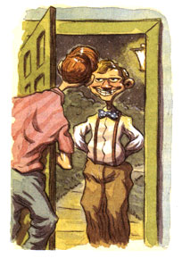

The Last Laugh
Looking for a little country peace and quiet? Better buy some ear plugs.
In the throes of creation, a writer intentionally enters ecstasies of such intensity that the words flow easily, almost unconsciously for unbroken moments. It can take days of inchoate, struggling thought to generate 15 minutes of such a mood. Warm water is sometimes conductive to the flow. Nothing like a soothing bath in the peace and privacy of our little ...What the heck?
I get out, put on a bathrobe, and go out to the kitchen to pick up the phone. "What?"
"Is this Mr. Doolittle?" This wrong name, as listed in the phone book, serves to identify commercial calls.
"No. Why?"
"May I speak to him?" A bit pushy for my taste.
"You have five seconds to state your business. Four. Three..."
He stammers and quacks a little, but ultimately gets to the point: he's selling a product that will treat our septic tank effluent. "I want you to try it for a month," he insists, "and then tell me if it isn't the most..."
Do I believe what I'm hearing? "Tell you what, sport: why don't you flush your product down your toilet"-I hang up with some verve-"and dive in after it!"
Back to the tub. Where was I? Swirling once again into contentment when knock, knock, woof, woof, someone's at the door. The knocks get more insistent... our dogs bark louder. It's outrageous that I should be interrupted twice, since I'm entering a rather fecund stage right now. But I dry off, more or less, and throw on clothes.
A total stranger stands on our porch, looking at me expectantly. He looks about 20. "Hi. My car broke down. Can I use your phone?"
Of all the pleasures of country life, privacy is at once the sweetest and the most fragile. Strangers can appear at any hour of the day or night: lost, dazed, cold and shivering, confused, out of fuel, brand-new pedestrians. We've helped them fix tires, given them gas, called tow trucks, and let them use our phone. Most of them are good folks.
However, some would be enormously improved by death. Last summer, some irresponsible party dumped a maniac in our driveway. My wife dialed 911 while I spoke soothing words like "back off" and "I mean it." He was apparently twisted on vodka and animal tranquilizers, unreasonable and menacing, but just as I was explaining how much it would hurt us both if I had to run him through the body with a pitchfork, the police arrived.
An additional incident transpired a few years ago. Two felons fleeing from police pursuit decided to turn into our driveway, while my wife and I were outside talking about my mother-in-law, who was inside. They ran toward our house. I love my mother-in-law, even after a two-week visit, but had they taken her hostage, she might well have missed her plane.
While I was arming myself with a hatchet, my wife charged, screaming epithets you won't find in the dictionary. The bad guys veered east and ran into the darkness of a Christmas tree field. My hat goes off to those boys, who outran the dogs I set on them.
So there was nothing wrong with that young man's need to use my phone that a little reasoning wouldn't cure. Let's see ...yeah, the world's most luxurious, fully staffed wilderness phone booth is officially closed today. Even if he could use my phone, I declined to let him use my house. So: "Well, I can't let you in, but I'll call a tow truck for you."
"Actually," he explains, I need to phone my uncle and have him come get me."
He seems to be hard of listening, so I try again: "Why don't you give me his number and I'll call for you?"
His sagging smile says that he has a problem with that good idea, which is incidentally my final offer. "Well, my uncle might not be home, then I'd have to call someone else." He shrugs, a "What can I say?" gesture that puts the ball in my court.
Okay, I'll use a backhand. I point up the highway to the west. "Why don't you go up the road to the pay phone? It's only about a mile:' As the crow flies, that is, but he'll be there in less than an hour, and the walk will do him some good.
Comprehending slowly, he takes off, tossing me a sullen look. I can hear him telling his pals at the dorm: "So I go like, y'know, why can't I just book inside and use the phone, dude? And he's all like, `Get outta my face, scum: I mean, like, what kind of rad dude disses me like that?"
He looked trustworthy enough, I think, as he becomes a receding dot on the highway. He may have been a student from the local university. Then again, a friend of mine who worked in a mental hospital once gave me a detailed word-picture of a sociopath, and it fit this guy like spandex: friendly smile, smooth brow, innocent eyes that never lost their happy shine when he strangled the life out of strangers. "He always asked to use the phone," my friend said, "and people just let him in."
Recently we've installed a floodlight on a motion sensor, so the next batch of nighttime wayward fugitives will be illuminated the second they arrive. If they need help, I'll help them. Should they be armed and violent, they will have a remarkably bad day, because so am I. Like most country people, I own a shotgun for taking care of the odd rabid skunk. Out here, police response time is a little less than an hour, and that's plenty of time to tidy up in case of a tie.
|
 |
|
|